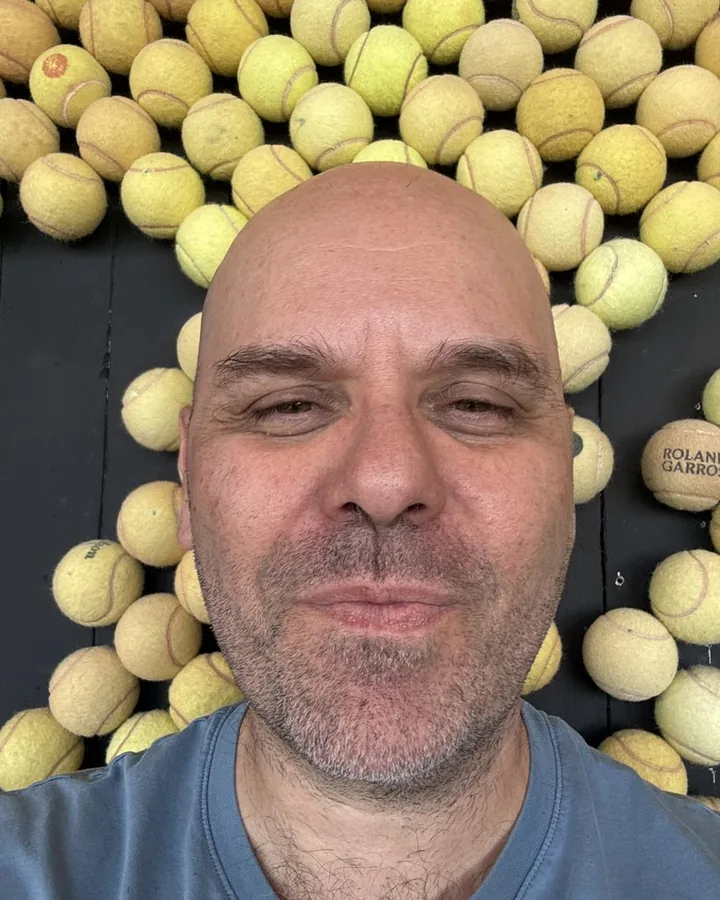

B1
Compulsion is not a loss of control. It is goal-directed motivation running under biased parameters.
B2
B3
B4
880k
170M
11,156
4
Four lines of inquiry, one question: why does goal pursuit go wrong?
B1
B2
B3
B4
Nine traditions, four biases
B4B3
B2B1B3
B1B3
B3B4
B2B4
B3B4
B3
B3
B3B4
BB
A hands-on methodological toolkit.
Two decades toward one idea.
Selected and complete list
Impact of provoked stress on model-free and model-based reinforcement learning in individuals with alcohol use disorder
Leveraging memory suppression from a goal-directed perspective to regain control over alcohol consumption
Psilocybin-assisted therapy for severe alcohol use disorder: protocol for a double-blind, randomized, placebo-controlled phase II trial
Behavioural expressions of loss-chasing in gambling: a systematic scoping review
Effects of winning and losing streaks on within-session chasing in online gambling: a replication and extension study
Examining between-session chasing via time of return in large-scale eCasino data
Between-session chasing via session wager and duration in large-scale eCasino data
The modulation of acute stress on model-free and model-based reinforcement learning in gambling disorder
Winning and losing in online gambling: effects on within-session chasing
Distinct motivations to seek out information in healthy individuals and problem gamblers
Transcranial direct current stimulation combined with alcohol cue inhibitory control training reduces the risk of early alcohol relapse: a randomized placebo-controlled clinical trial
What I don't yet know.
Q1
Q2
Q3
Q4
Q5
Q6
Q7
Thinking out loud.
Training the next generation of addiction scientists.
Reviewing, evaluating, and advising across the field.
Transparency as part of the method.
Psychology in the public conversation.
Funding, donations, and awards.
Xavier Noël
